Malaisie & Singapour · Lausanne
Rumah
La nourriture réconfortante de la Malaisie arrive « à la maison », à Lausanne.
Sur place ou à emporter, du mardi au samedi · Chemin de Chandieu 12
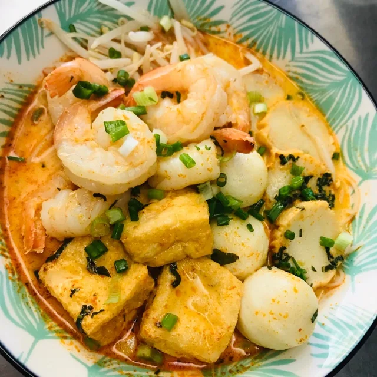
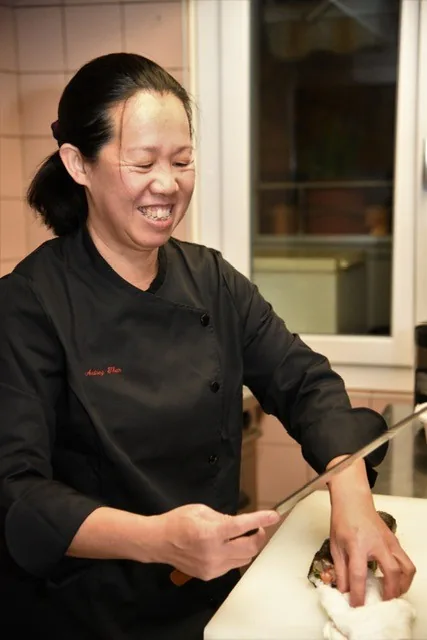
La cheffe
Audrey Then
« La cheffe retourne à ses racines malaisiennes pour vous les faire partager. »
- Une cuisine aux quatre originesChinoise, indienne, peranakan et malaise : l'une des cuisines les plus diversifiées d'Asie.
- Viande suisse, tout fait maisonLe poulet et le bœuf servis chez Rumah sont suisses. « Tout fait maison », écrivent les clients.
- Seule aux fourneauxÀ l'opposé des brigades, Audrey Then fait tourner sa cuisine sans commis ni second, comme l'a raconté Blick en mars 2023.
Sur place ou à emporter
Six plats de la carte
Des soupes parfumées au curcuma et à la citronnelle, le riz au lait de coco, les brochettes et leur sauce cacahuète. Prix en francs, tels que publiés sur rumah.ch.
-
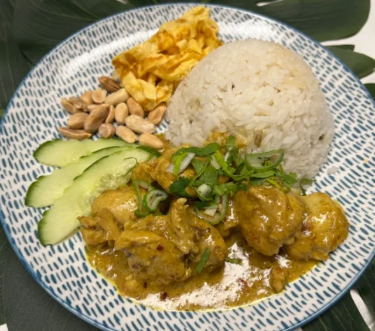
Nasi Lemak & RendangNasi Lemak Ayam
27.00Riz cuit au lait de coco, œuf, cacahuètes grillées, concombre et sambal Rumah, avec le poulet.
-
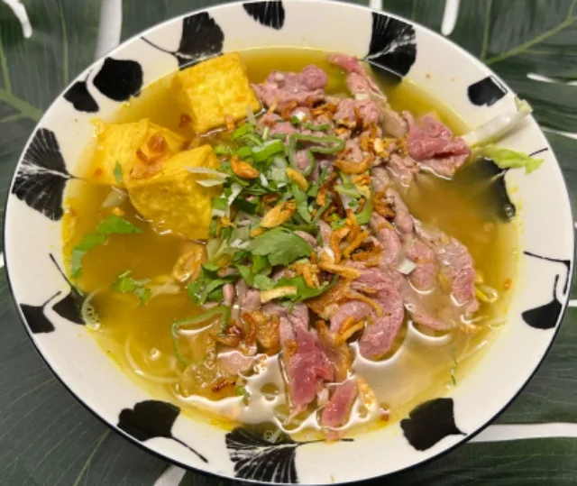
Suggestion du momentMee Hoon Soto Daging
28.00Vermicelles de riz, bouillon infusé de curcuma, citronnelle et gingembre, émincé de bœuf, tofu de poisson.
-
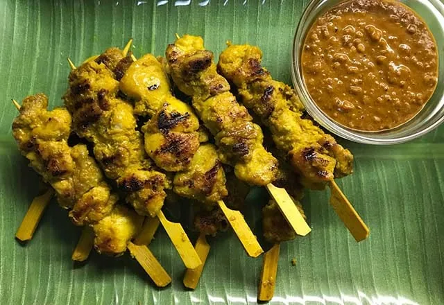
EntréesSatay Ayam (3 pcs)
14.00Brochettes de poulet satay, sauce cacahuète.
-
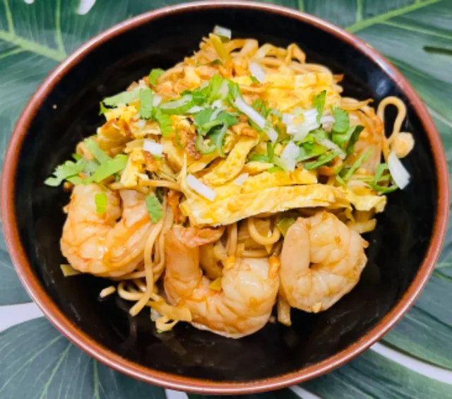
Mee GorengMee Goreng Udang
28.00Nouilles sautées aux légumes et à l'œuf, crevettes.
-
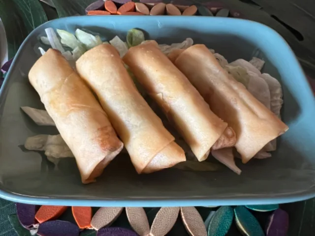
EntréesPopiah Goreng (4 pcs)
7.00Rouleaux aux légumes frits, sauce Rumah.
-
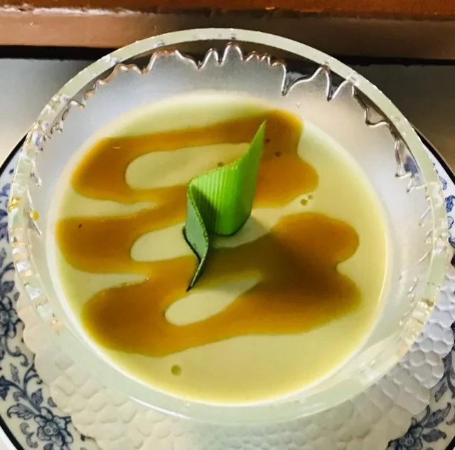
Manisan · DessertsPanna cotta coco pandan
8.00Avec son sirop de coco pandan.
Allergies ou intolérances : l'équipe vous renseigne volontiers sur les ingrédients, sur simple demande.
« À l'opposé des brigades, certains chefs exercent en solitaire et font tourner leur restaurant sans l'aide de commis ou de seconds. Une expérience exigeante, mais formatrice ! »
Blick · mars 2023
- Gault&Millau, avril 2022
- « Quand est-ce qu'on mange ? », janvier 2022
- Reçue par l'Impératrice de Johor
Ce qu'en disent les clients
Fait avec amour
« Très bonne nourriture authentique, et fait avec amour. Viande suisse et tout fait maison. Merci pour ce voyage. »
« Petit restaurant familial avec beaucoup de charme, repas délicieux fait maison. À tester absolument ! »
« On apprécie tous les petits détails mis et le soin apporté à chaque plat que nous avons dégusté. »
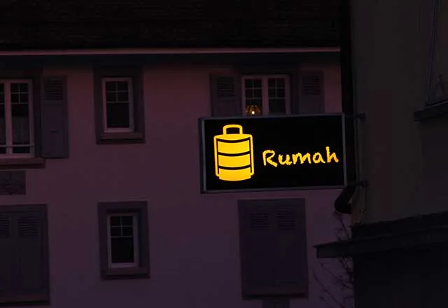
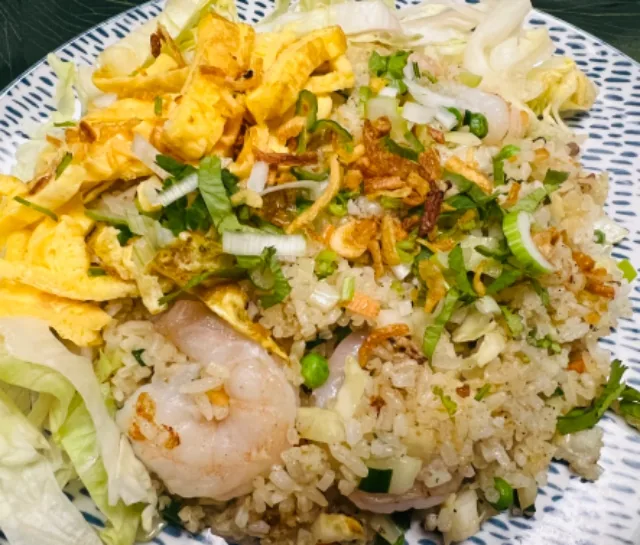
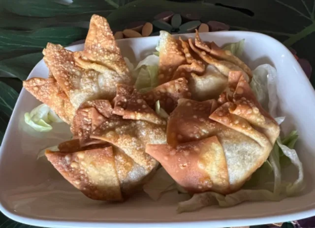
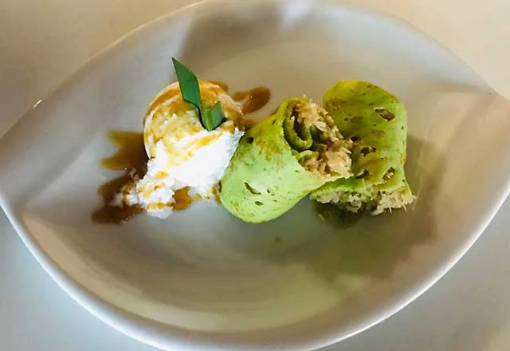
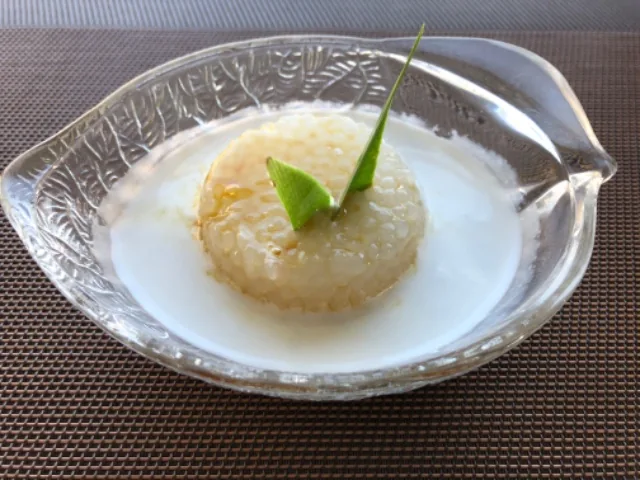
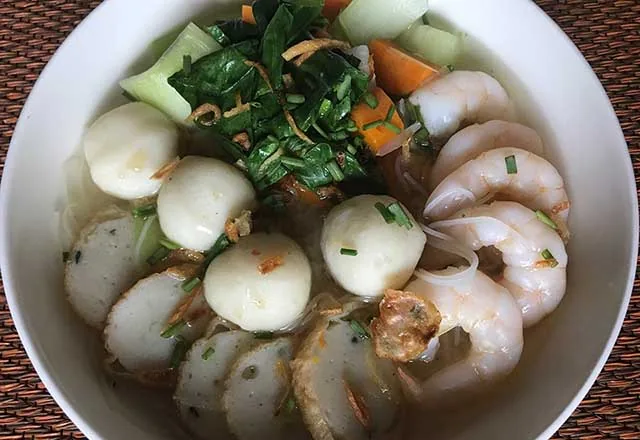
Le restaurant
| Mardi au vendredi | 11h45 – 14h00 18h45 – 22h00 |
|---|---|
| Samedi | Le soir, 18h45 – 22h00 |
| Dimanche et lundi | Fermé |
À l'emporter
| Mardi au samedi | 11h45 – 13h30 18h45 – 21h00 |
|---|
Commande en ligne ou par téléphone. Commander